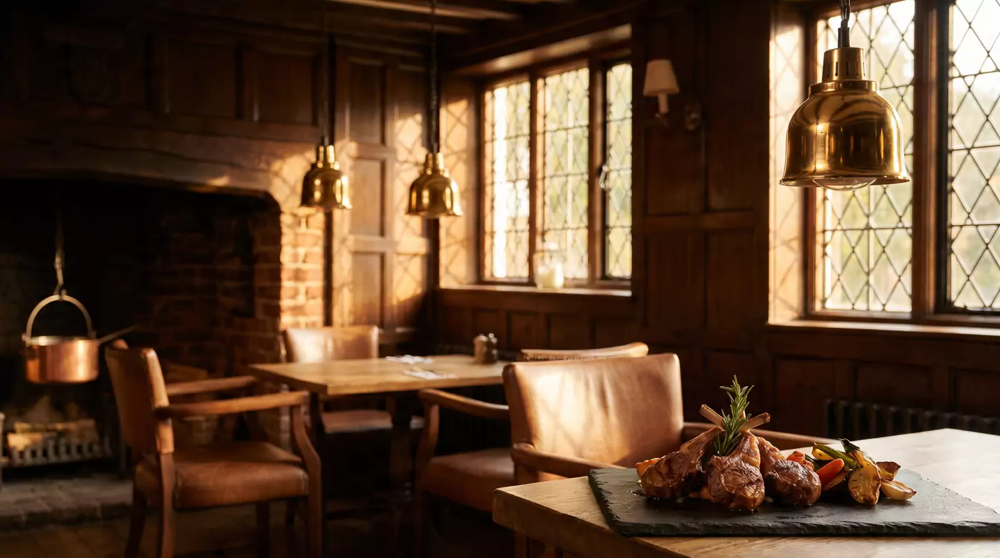
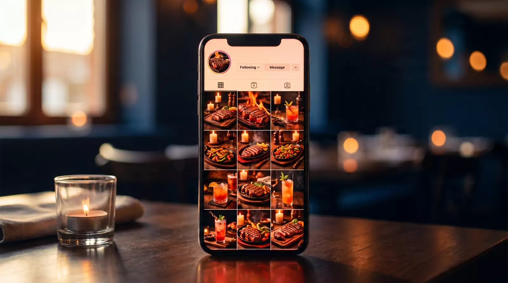
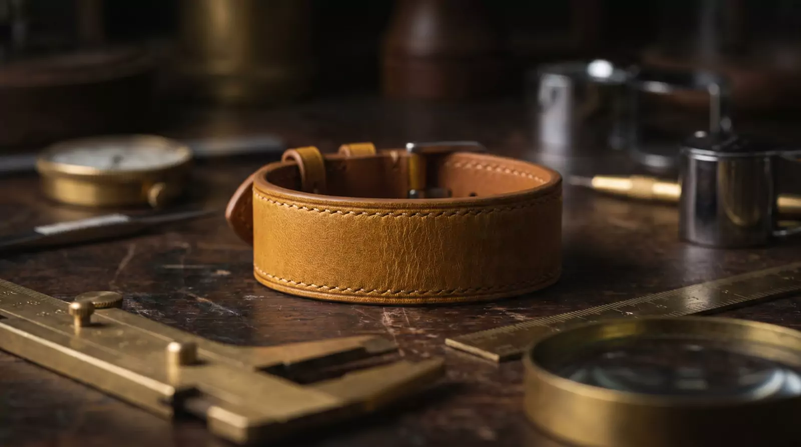
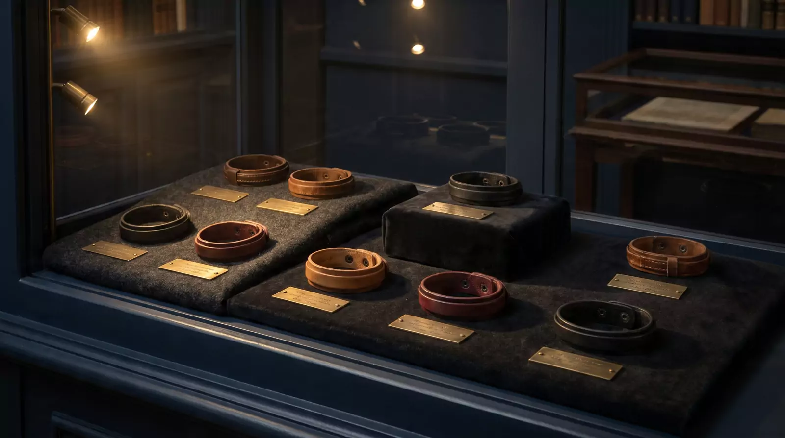
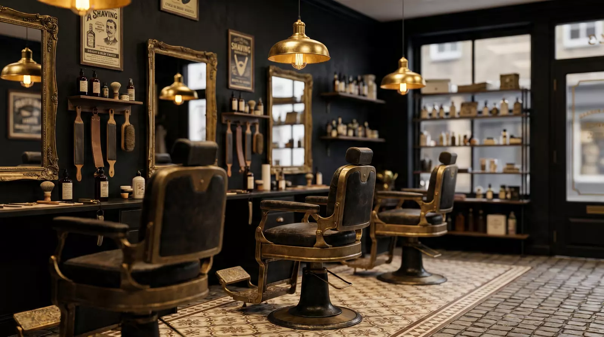

Real numbers from real UK businesses. Every metric below is taken directly from platform data, no estimates, no projections.
A well-established local restaurant with strong word-of-mouth but zero online presence. No social media traction, no Google visibility, entirely dependent on walk-ins and regulars. Wanted to reach new customers without paid advertising.


In 29 days, our Instagram went from invisible to reaching 28,000 accounts. The system runs itself. We just responded to the enquiries.
A luxury leather accessories brand on eBay with strong products but poor visibility. Titles were unoptimised, listing quality was low, and the store was invisible to the algorithm. The founder needed a complete infrastructure rebuild before any meaningful sales growth was possible.


The listings rank in the top 1 to 5 percent of their eBay categories. Infrastructure is built, traffic is arriving, and conversion is improving. Photography remains the single unresolved variable. Once resolved, the platform is primed to convert at its full potential.
Saman runs the only proper traditional barber shop on Sevenoaks high street. Real craft, no online presence. New clients couldn't find him, returning ones couldn't book him, the heritage of the trade never made it past the front door. He needed a site that did three things in order: people find him, people book, people walk in.

Chaplins is the brand-first case. No reach metric, no impressions ranking, no conversion uplift to quote. The point was a proper online home that matches the craft Saman runs in the shop. Domain, site, handover pack, ownership transfer for one fee. We can still push edits when he asks. The success metric is that he uses it on his Google Business listing and clients find him at the right address. Live at chaplinsofsevenoaks.co.uk.
Book a free 30-minute strategy call. We'll show you exactly what's possible for your business specifically. No generic pitches.